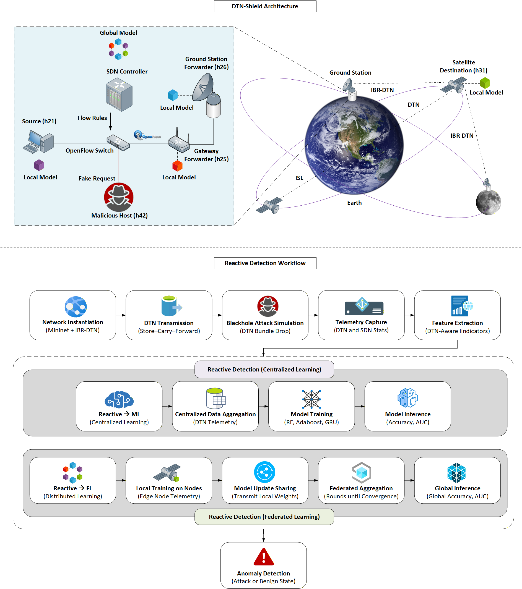

Journal Article
DTN-SHIELD: A Software-Defined Federated Learning Framework for Blackhole Attack Defense in Delay-Tolerant Networks
This paper presents DTN-SHIELD, a software-defined federated learning framework for detecting and defending against blackhole attacks in delay-tolerant networks.
DOI Full Access